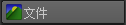

您可以将纹理文件指定给“遮罩”(Mask)属性和其他修改器属性来控制其值。指定的纹理将根据其颜色值设置属性。例如，贴图的白色区域显示全部属性值，黑色区域生成属性值 0，而灰色区域生成属性值 0.5。
- 在“密度遮罩”(Density Mask)或要控制的修改器属性旁边，单击
 。
。
- 在“创建渲染节点”(Create Render Node )窗口中，单击“文件”(File)图标：。
Maya 将创建一个文件纹理节点。
- 在节点的“属性编辑器”(Attribute Editor)中的“文件属性”(File Attributes)下，单击“图像名称”(Image Name)旁边的浏览图标 (
 )，然后选择要使用的纹理文件。
)，然后选择要使用的纹理文件。